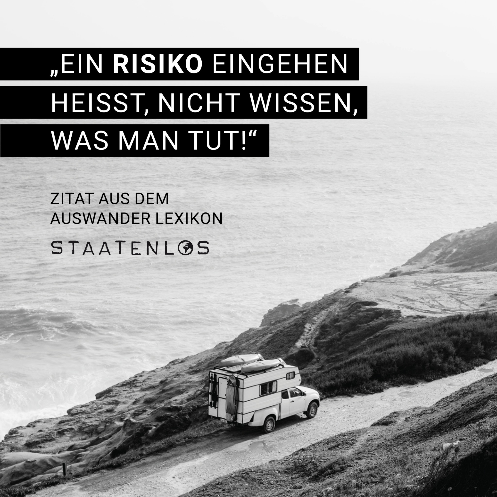

Traumlagune oder echter Alltag – wie gut funktioniert Leben mitten im Pazifik?
Der Südpazifik sieht auf Bildern häufig nach dem perfekten Gegenentwurf zu Stress, Großstadt und grauem Alltag aus: kleine Inseln, türkisfarbenes Wasser, Palmen und viel Natur. Für einen Urlaub reicht dieser Eindruck. Für mehrere Monate oder ein echtes Auswanderungsziel reicht er nicht.
Gerade hier müssen wir Entfernung, medizinische Versorgung, Zyklon- und Erdbebenrisiko, Importpreise und Internet deutlich stärker gewichten. Deshalb vergleichen wir wieder nach denselben zwölf Kriterien. Ein Ziel muss nicht 12 von 12 Punkten erfüllen. Wichtig ist, ob es für unsere Lebensrealität als Testreise, längeren Aufenthalt oder spätere Auswanderungsoption funktioniert.
Was möchtest du über Auswandern in den Südpazifik wissen?
Fünf Fragen, die bei diesen Inselzielen wirklich entscheidend sind.
Wo sind Langzeitmieten von etwa 300–600 € noch realistisch?
Kann man zu zweit mit rund 2.000 € im Monat gut leben?
Welches Ziel eignet sich besonders für ein ruhiges Leben mit Kind?
Wo funktioniert Remote Work am unkompliziertesten?
Wo ist die medizinische Versorgung vergleichsweise am stärksten?
Welches Südpazifik-Ziel passt am besten?
| Ziel | Kosten | 300–600 € Miete | Sicherheit | Medizin | Meer | Remote Work | Unser Eindruck |
|---|---|---|---|---|---|---|---|
| Fidschi | mittel | regional möglich | normale Vorsicht | Hauptinseln besser | sehr stark | am unkompliziertesten | Top Allrounder |
| Cookinseln / Aitutaki | eher hoch | nur lokale Deals | ruhig | begrenzt | Lagunen-Traum | inselabhängig | emotionaler Favorit |
| Französisch-Polynesien | hoch | meist zu knapp | gut mit Vorsicht | regional vergleichsweise gut | Traummeer | Tahiti gut | Luxus-Traum |
| Samoa | vergleichsweise gut | oft interessanter | ruhig | Grundversorgung | sehr gut | konkreten Ort prüfen | Slow-Life-Tipp |
| Tonga | vergleichsweise gut | teils realistisch | ruhig mit Vorsicht | eingeschränkt | sehr gut | Insel/Ort prüfen | Ruhe-Favorit |
| Vanuatu | stark ortsabhängig | Port Vila oft darüber | niedrige Kriminalität | nur Grundversorgung | sehr stark | Standort prüfen | Natur stark, Risiken höher |

Wo kann man im Südpazifik mit 300–600 € Langzeitmiete starten?
Unser Mietrahmen funktioniert hier deutlich schlechter als in Afrika, Asien oder Teilen Südamerikas. Samoa und Tonga sind am interessantesten, wenn man lokale Langzeitangebote statt Ferienunterkünfte findet. Auf Fidschi können einfachere Wohnungen außerhalb der teuersten Zentren in Reichweite kommen. Auf den Cookinseln liegt der Rahmen eher an der Unterkante dessen, was echte lokale Langzeitmieten kosten können, während touristische Monatsangebote deutlich teurer sind.
Französisch-Polynesien fällt bei unserem Budget klar zurück. Auch Port Vila in Vanuatu kann überraschend teuer sein. Hier wäre unser 300–600-€-Ziel eher eine Ausnahme als eine verlässliche Planungsgröße.
Fidschi
Unser stärkster Allrounder im Südpazifik: viele Inseln, gute Auswahl und mehr Infrastruktur als auf den kleineren Inselstaaten.
Kleinkriminalität, Einbrüche und einzelne Raubüberfälle kommen vor; nachts und in abgelegenen Gegenden ist mehr Vorsicht nötig. Insgesamt würden wir sehr stark nach Insel und Wohnlage auswählen.
Die Versorgung entspricht vor allem in ländlichen Gebieten nicht deutschem Standard. Größere Krankenhäuser gibt es unter anderem in Suva, Nadi, Lautoka, Ba und Labasa. Für abgelegene Inseln bleibt eine Evakuierungsversicherung wichtig.
Der 300–600-€-Rahmen kann außerhalb der teuersten Lagen funktionieren, ist aber nicht überall selbstverständlich. Suva und hochwertige Küstenlagen liegen häufiger darüber.
Sehr große Auswahl: Lagunen, Inselstrände und Riffe. Die konkrete Bucht entscheidet über Strömung, Korallen und Familienfreundlichkeit.
Tropisch warm. Von November bis April ist Zyklonsaison; Starkregen und Überschwemmungen können Verkehr und Inselverbindungen beeinträchtigen.
Dengue, Chikungunya, Zika und Leptospirose kommen vor. Auf abgelegenen Inseln ist die medizinische Erreichbarkeit ein deutlich größerer Faktor als im Urlaub.
Beste Mischung aus Infrastruktur, Inselgefühl, Meer und Auswahl an unterschiedlichen Wohnorten.
Weite Entfernung, Naturgefahren, schwächere Medizin außerhalb der Hauptinseln und teilweise höhere Mieten.
Cookinseln / Aitutaki
Unser Lagunen-Traum: Aitutaki trifft unser Wunschbild aus flachem türkisfarbenem Wasser, Palmen, Ruhe und kleiner Insel fast perfekt.
Die innenpolitische Lage gilt als ruhig; Kleinkriminalität kommt vor allem an touristischen Orten vor. Für unseren Sicherheitsfaktor ist das ein klarer Pluspunkt.
Die medizinischen Möglichkeiten sind begrenzt, besonders auf äußeren Inseln. Schwere Fälle müssen häufig nach Neuseeland oder Australien ausgeflogen werden.
Der 300–600-€-Rahmen ist nur mit echten lokalen Langzeitangeboten realistisch. Ferien- und Monatsunterkünfte können erheblich teurer sein. Auf äußeren Inseln sind lokale Mieten teilweise günstiger.
Aitutaki ist genau wegen seiner großen, flachen Lagune unser emotionaler Favorit. Für Baden und ruhiges Wasser ist das Ziel kaum zu schlagen.
Gemäßigt tropisch. Regenzeit etwa Dezember bis März; Wirbelsturmsaison von November bis April.
Zyklone, Erdbeben und Tsunami-Risiko gehören in die Planung. Dengue und Chikungunya kommen vor. Für längere Aufenthalte muss die Aufenthaltsgenehmigung aktiv organisiert werden.
Ruhig, klein, traumhafte Lagune und sehr nah an unserem persönlichen Wunschbild.
Sehr weit weg, medizinisch begrenzt und bei längeren Aufenthalten deutlich teurer als viele unserer anderen Kontinente.
Französisch-Polynesien / Bora Bora
Der Luxus-Traum unserer Liste: spektakuläre Lagunen und bessere medizinische Möglichkeiten als auf vielen kleineren Pazifikinseln – aber mit deutlich höherem Preisniveau.
Für einen längeren Test macht Französisch-Polynesien einen grundsätzlich stabilen Eindruck. Wie in anderen Überseegebieten bleibt normale Vorsicht vor Diebstahl und in ärmeren Gegenden sinnvoll.
Die medizinische Versorgung in den französischen Überseegebieten liegt nicht auf europäischem Standard, gilt im regionalen Vergleich aber als gut. Tahiti ist deutlich besser aufgestellt als kleine Außeninseln.
Hier verliert das Ziel klar Punkte: Bereits Papeete liegt bei normalen Einzimmerwohnungen häufig deutlich über unserem 300–600-€-Rahmen. Bora Bora ist noch weniger ein Budgetziel.
Lagunen, Motus und unglaublich klares Wasser sind der große Traumfaktor. Für unser Meer-Kriterium gehört Bora Bora ganz nach oben.
Tropisch bis subtropisch. Im Südpazifik ist von November bis April mit Tropenstürmen zu rechnen.
Dengue und Chikungunya können auftreten. Der größte praktische Nachteil ist neben der Entfernung vor allem das hohe Preisniveau für Wohnen und importierte Waren.
Traummeer, Lagunen und regional vergleichsweise gute medizinische Basis.
Sehr teuer und für unser 2.000-€-Monatsbudget als dauerhaftes Ziel eher unpassend.
Samoa
Unser authentischer Slow-Life-Kandidat: tropisch, ruhig und preislich interessanter als die bekanntesten Luxusinseln.
Die innenpolitische Lage ist ruhig. Kleinkriminalität kommt vor allem an touristisch stark frequentierten Orten vor.
In Apia gibt es ein staatliches Krankenhaus sowie Privatkliniken, Gesundheitszentren und Zahnärzte. Für komplexe Fälle bleibt eine Rückhol- oder Evakuierungsversicherung wichtig.
Mit lokalen Langzeitangeboten gehört Samoa zu den interessantesten Kandidaten für unseren 300–600-€-Korridor. Importierte Lebensmittel und einzelne touristische Lagen können den Alltag trotzdem verteuern.
Viele tropische Strände, natürliche Pools und Riffe. Wie immer muss die konkrete Küste wegen Riff, Wellen und Gezeiten geprüft werden.
Tropisch. Regen- und Zyklonsaison liegt vor allem zwischen November und April.
Samoa liegt in einer seismisch aktiven Zone. Gesellschaftlich ist das Land deutlich konservativer als Deutschland; dieser Punkt gehört für uns ausdrücklich zum Alltagstest.
Ruhig, authentisch, warm und für unser Budget wesentlich interessanter als Bora Bora.
Extrem weit von Deutschland entfernt, konservativer Alltag und Naturgefahren.
Tonga
Unser Ruhe-Kandidat: wenig Massentourismus, viele Inseln und ein sehr langsames Lebensgefühl – mit deutlichen Abstrichen bei Medizin und Erreichbarkeit.
Die innenpolitische Lage gilt derzeit als ruhig. Kleinkriminalität sowie einzelne Gewalttaten und sexuelle Übergriffe können vorkommen.
Die Versorgung entspricht besonders außerhalb der Städte nicht europäischem Standard. Krankenhäuser und Notfallversorgung gibt es unter anderem in Nuku'alofa, Ha'apai und Vava'u.
Tonga kann grundsätzlich in unseren 300–600-€-Bereich passen, wenn man keine hochwertige Expat-Unterkunft im Zentrum erwartet. Die Datenlage ist allerdings kleiner als bei größeren Ländern.
Traumhafte Inselwelt, Riffe und ruhige Buchten. Die passende Insel entscheidet über Alltag, Versorgung und Bademöglichkeiten.
Tropisch warm; von November bis April ist Wirbelsturmsaison.
Tonga liegt in einer seismisch aktiven Zone. Außerdem ist der gesellschaftliche Alltag konservativer; öffentliche Kleidung und persönliche Freiheit sind stärker reglementiert als in Europa.
Sehr ruhig, wenig Massentourismus und mit lokalen Mieten preislich interessant.
Medizinisch schwächer, sehr weit entfernt und höheres Zyklon-/Erdbebenrisiko.
Vanuatu
Der spektakulärste Natur- und Abenteuerkandidat: Inseln, Vulkane und tropisches Meer – aber genau diese Natur erhöht auch das Risiko.
Die Kriminalitätsrate wird aktuell als niedrig beschrieben. Einzelne Überfälle, Diebstähle und sexuelle Belästigung kommen dennoch vor, besonders nachts ist mehr Vorsicht sinnvoll.
Eine Grundversorgung besteht in touristisch erschlossenen Gebieten. Einfach ausgestattete Krankenhäuser gibt es in Port Vila und Luganville; moderne medizinische Versorgung findet man eher in Australien oder Neuseeland.
Port Vila ist deutlich teurer, als man bei einem Pazifikinselstaat erwarten könnte. Unser 300–600-€-Korridor ist dort meist zu knapp; auf anderen Inseln kann es günstiger sein, dafür sinkt die Infrastruktur.
Wunderschöne tropische Küsten, Lagunen und Riffe. Für Natur- und Meeresfaktor sehr stark.
Tropisch. Von November bis April können starke Winde und Zyklone auftreten.
Vanuatu liegt in einer sehr aktiven Erdbeben- und Vulkanzone; Tsunamis sind möglich. Zusätzlich besteht ganzjährig Malariarisiko, und 2026 wird auf Ciguatera-Fischvergiftungen hingewiesen.
Niedrige Kriminalitätsrate, außergewöhnliche Natur und sehr viel Inselgefühl.
Vulkane, Erdbeben, Zyklone, Malaria, schwächere Medizin und höhere Mieten in Port Vila.
Welche Ziele eignen sich besonders für Remote Work?
Fidschi ist für uns der pragmatischste Remote-Work-Kandidat, weil es mehrere größere Zentren, mehr Unterkunftsauswahl und eine breitere Infrastruktur gibt. Tahiti ist ebenfalls vergleichsweise gut angebunden, scheidet aber beim Budget deutlich schlechter ab. Samoa, Tonga, Aitutaki und Vanuatu können funktionieren – dort wird die konkrete Unterkunft jedoch wichtiger als der Ländername.
Wo ist die medizinische Versorgung am stärksten?
Französisch-Polynesien schneidet regional vergleichsweise gut ab, wobei Tahiti deutlich stärker ist als kleine Außeninseln. Fidschi hat auf den Hauptinseln mehrere größere Krankenhäuser. Samoa bietet in Apia eine brauchbare Grundversorgung. Bei Cookinseln, Tonga und Vanuatu muss bei schweren Fällen realistischerweise auch eine medizinische Evakuierung nach Neuseeland oder Australien mitgedacht werden.
Welches Ziel eignet sich für ein ruhiges Leben mit Kind?
Für einen ersten längeren Test würden wir Fidschi, Samoa und die Cookinseln priorisieren. Aitutaki erfüllt unseren Wunsch nach Lagune und Ruhe besonders stark, verliert aber bei Medizin und Entfernung. Samoa ist authentischer und preislich interessanter, gesellschaftlich jedoch konservativer. Fidschi bietet die breiteste Auswahl an Orten und die bessere Alltagsinfrastruktur.
Vanuatu und Tonga würden wir wegen Medizin und Naturgefahren vorsichtiger testen. Bora Bora ist traumhaft, passt aber deutlich schlechter zu unserem Budget.
Kann man mit ungefähr 2.000 € im Monat zu zweit gut im Südpazifik leben?
Teilweise – aber nicht so komfortabel wie in unseren günstigeren Kontinenten. Samoa und Tonga sind die spannendsten Kandidaten. Fidschi kann mit einer guten lokalen Langzeitmiete ebenfalls funktionieren. Vanuatu ist besonders in Port Vila teuer, die Cookinseln liegen oft über unserem Wunschbudget und Französisch-Polynesien ist für 2.000 € zu zweit eher ein Spar- als ein Komfortmodell.
Der große Kostenfaktor sind nicht nur Mieten. Auf kleinen Inseln werden viele Lebensmittel, Technikprodukte und Ersatzteile importiert – und genau das macht einen scheinbar günstigen Inselalltag schnell teurer.
Unser Südpazifik-Fazit: Traumziele – aber mit mehr Realitätstest
In keinem unserer bisherigen Kontinente liegen Traumfaktor und praktische Hürden so nah beieinander. Deshalb würden wir die sechs Ziele nicht nach einem einzigen Sieger sortieren:
Unser erster pragmatischer Test: Fidschi oder Samoa. Unser emotionalster Test: Aitutaki. Bora Bora würden wir eher als Traumreise betrachten, bevor wir es überhaupt als Langzeitkandidat bewerten.
Quellen & wichtige Hinweise
Für Sicherheits-, Gesundheits-, Einreise- und Kostenthemen wurden aktuelle Reisehinweise und öffentlich zugängliche Kostendaten mit Stand August 2026 herangezogen. Gerade bei kleinen Inselstaaten ist die Datenlage zu Langzeitmieten deutlich dünner als in Europa oder Asien; lokale Angebote müssen immer separat geprüft werden.
- Auswärtiges Amt – Fidschi
- Auswärtiges Amt – Cookinseln
- Auswärtiges Amt – Frankreich / Französisch-Polynesien
- Auswärtiges Amt – Samoa
- Auswärtiges Amt – Tonga
- Auswärtiges Amt – Vanuatu
- Numbeo – Fidschi
- Numbeo – Cookinseln
- Numbeo – Französisch-Polynesien
- Cook Islands Ministry of Education – Living in the Cook Islands